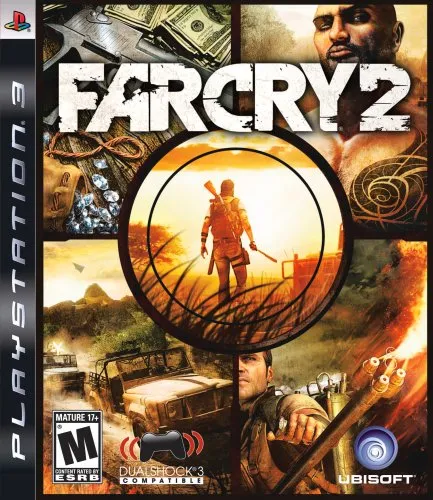

This is game game about:
- Action
- Open-World
- Adventure
This is main about to kill a smugller called jackel who arms both the parties
and we can choose 7 chooseabel protagonigst.This is the second best
game of the far cry series('course after far cry three)and still is the unbeatable
best.
To domload this you have to go "Gogunlocked" or go to this link here:
Farcry2
hope this help to play.
Far cry system requirement(Minimum):-
- CPU:3.2GHz Pentium 4, Pentium D 2.66 GHz, AMD Athlon 64 3500+ or better
- Ram:1GB
- Video card: 256 MB video card with Shader model 3 (NVIDIA GeForce 6800 + / ATI Radeon X1650 +)
- Total video ram:256 MB
- 3D:YES
- Free disk space:6GB[file size is only 2.50 GB]
- Sound card:Yes
Far cry system requirement(recommended)
Ram:4gb(6gb for smooth)
CPU:Intel Core 2 Duo Family, AMD 64 X2 5200+, AMD Phenom or better
Video card:512 MB video card with Shader model 3 (NVIDIA GeForce 8600 GTS + / ATI Radeon X1900 +)
Total video Ram:512 GB ram
3D:yes
Free disk space:6GB(File size is only 2.50 GB)
Sound card:Yes
My personal experience:-
- I have played the game and i have to sa that it is amazing and i ahve not been paid this is a review
given
in this paragraph
and sometimes it is good to also take a break to gaming and go outside and touch grass just this is all
and
i have posted one
Far-cry-2 and my click here:- SandWraith47
so when we get into the world of far cry or also know as Leboa-sako . In the frist 5 min of real time in
game
you will feel very bored
but just for 5min and after that nothing special after you woke up after survicing maralia and heavy open
fire
you will meet some officers
and just 10 min after some warm up in game you can do as you wish
. You will meet some buddies like Quabar,Joeshap and many as you go htrough the story.
Main problem:-
Too many enemy to go through by and not powerful and annoying
Long distance travel even if you use bus.You have to use external use of transport
Save game is a prob becasue it is not auto-save so if you do some mission big enough to die 2-3 time and you
forgot to save it and you die on very small
thing the game will throw you back at your last save and you have to that mission again
and you can rage quit it but patience is the key of success and just don'throw you computer.
Conclusion on FAR CRY 2
- It is a very good game and it's story is better than anything
- You should play as every 7 protagonigst
- So with this this is the conclusion because every game isn't perfect